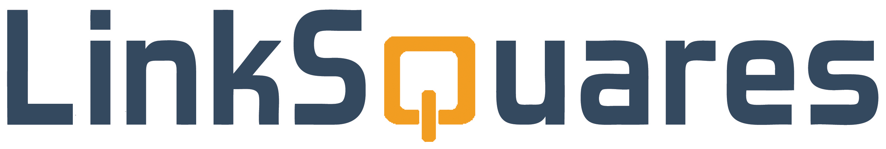
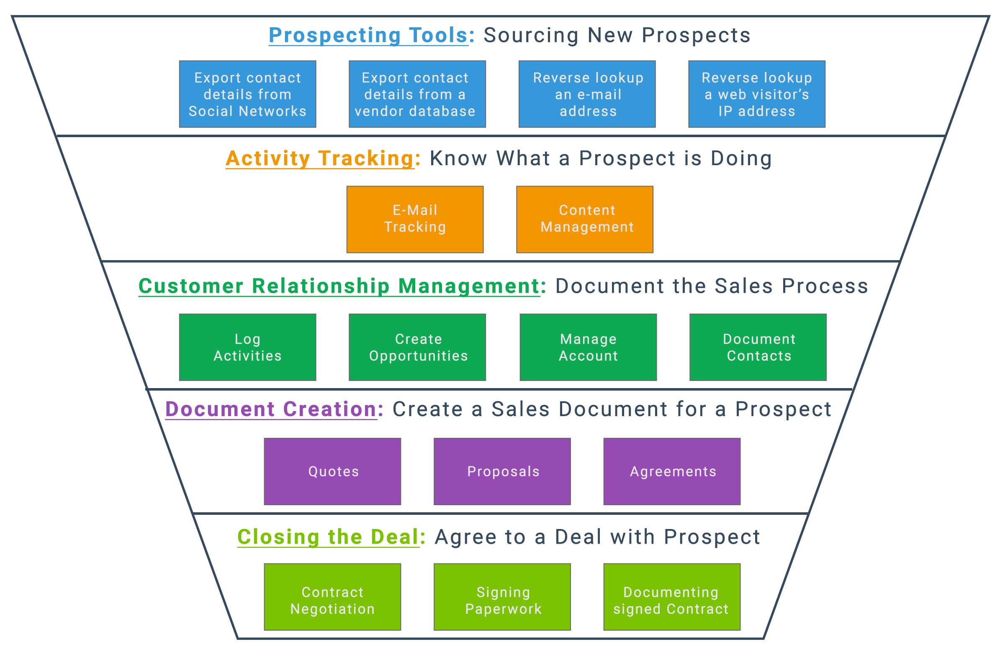
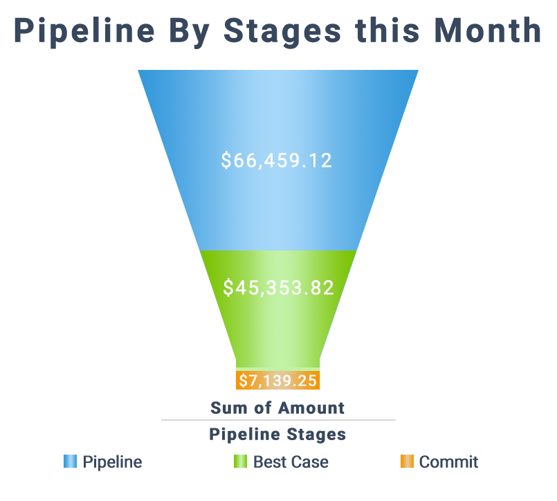

Natalie B. Lazo:
Artist, Web Designer, Fire Personified.
"LinkSquares Web and Graphic Design"
The following are a series of graphics and design work that I've done for the startup LinkSquares that officially launched their website on September 25th, 2015.
Background:
I started designing for LinkSquares in 2013 as a freelancer, where I created the font styling and the logos that are still used today on their website and across their social media. LinkSquares is a startup that uses a SaaS/Cloud-based application to help businesses keep track and negotiate contracts in one convenient interface. The design called for a sleek font with simple colors and a unique symbol that catches the viewer's attention.
My most recent jobs as theirweb and graphic design intern was to create their debut whitepaper which can be seen below, as well as a marketing PDF for their launch. This whitepaper can be downloaded by prospective clients to give them insight into the stack and knowledge that LinkSquares can offer. The marketing PDF can be sent to prospective clients wanting to know more about what our product can offer their business.
All graphics, layout, and font work for the whitepaper and PDF were done in a combination of InDesign, Photoshop, and Illustrator with careful attention to color schemes and font.
The Results:
This was the first whitepaper I have designed. A lot of preliminary research on whitepapers went into designing this, including using other whitepapers as inspiration. This project was completed over the span of two weeks, in which iterations in font and graphic styling were added and modified in accordance with the client's needs. This marketing PDF was treated like a deck presentation in my mind in order to gain interest in prospective clients for their beta launch. Using InDesign almost exclusively for layout was a great learning opportunity and helped make me more comfortable with using its intuitive interface.
The full site with my graphics in use can be viewed here:
LinkSquares
PDF Can be downloaded from the LinkSquares site. Click here to download the White Paper.
This marketing PDF can also be downloaded from the site or viewed here.
Below are standalone graphics designed for the LinkSquares Brand.


